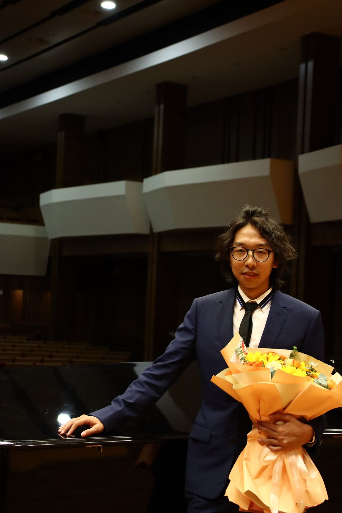

Shouye Huang (b. China) is a composer whose music bridges classical tradition and contemporary electronic expression.
His work explores the synthesis of Eastern aesthetics with Western modernist and postmodernist practices, forming a sound world where contrasting idioms coexist organically.
He is a PhD student in Composition at the University of Minnesota, where he studies with Sivan Cohen Elias.
Works
Large ensemble
Dreams of the Mirage for orchestra Programme note and video
Premiere: MSM Symphony Orchestra, April 11, 2025, Aaron Davis Hall, The City College of New York.
Watch on YouTube
Freud’s theories on dreams and the unconscious provide a profound framework for understanding Dreams of the Mirage. This work originates from a vivid dream of mine: I returned to a concert hall and heard my own music being rehearsed, an experience that was both familiar and ahead of reality. This moment reflects the inner longing for creation and the continuation of artistic life, even within the realm of sleep.
After waking, I was seized by a strong desire to capture every fragment of the dream: the echo of the hall, the changing harmonies, and the performers’ secondary interpretation of the music. This impulse to transform the dream into real sound echoes Freud’s theory of sublimation, in which hidden desires and unconscious energy are transformed into creative expression. Through composition, the dream is no longer a fleeting illusion but becomes a vivid soundscape, like a living mirage.
The piece falls into two parts, I. The Unconscious (bars 1–49) and II. Between Dream and Reality (bar 50 to the end), closing with a coda from bar 99. The music unfolds in multiple layers, employing whole-tone and chromatic ascending or descending motion to create colorful harmonies. In the dream, powerful brass sounds are heard at the very beginning; even within the dream, such solid sonorities convinced me that I was truly in the rehearsal hall. I wrote down all the musical details after waking and worked to adjust the balance of sounds; rhythmically, I generated new material through a process of fission, generating progressively intricate rhythmic patterns. From simplicity to complexity, the horizontal motion of pitch becomes faster and faster, enriching the vertical harmonic colors. The orchestral timbres, sometimes bright, sometimes dark, shift fluidly. Gentle transitions connect each section, as if one were standing inside a mirage that is constantly reshaping itself.
The second part consists largely of extended techniques. Many instruments create air sounds and white-noise textures: woodwinds playing without reeds, brass without buzzing, and strings on the bridge with muted left hands. Some materials stand out for their distinctive color: brass with different mutes, vibraphone played with medium-soft xylophone mallets and bowed to bend the pitch, trombones producing metallic impacts with the slide, and double basses drumming on the body of the instrument. This part is like a dialogue between consciousness and the unconscious, between the composer within the dream and the composer who awakens to create.
Coda: Dream within a Dream. The previous themes return at half their original tempo, serene and contemplative, as if upon awakening. The orchestration becomes sparse and transparent: strings alternate between sul ponticello and sul tasto, woodwinds switch between two timbres (bisbigliando), accompanied by a minimal amount of percussion. It guides the listener into a realm where sound, memory, and desire intertwine, a space where the music itself becomes a dream within a dream.
Chamber
2084 for baritone, bass clarinet, trumpet, trombone and electronics. Text by George Orwell Programme note and video
Commissioned by Loadbang. Premiere: Loadbang, June 26, 2025, Longy School of Music, Boston.
Watch on YouTube
George Orwell’s 1984 envisioned a world defined by constant surveillance and the erosion of personal freedom. 2084 draws inspiration from this iconic work, not as a literal continuation of Orwell’s narrative but as a contemporary reflection on technology’s increasingly intimate role in shaping human life.
Today, artificial intelligence mediates our communication, tracks our decisions, and quietly reshapes our sense of autonomy. 2084 explores these shifting boundaries between the digital and the personal. Where do convenience and innovation end, and where does human agency begin? How do we navigate the tension between connection and control in a world where every action leaves a data trace?
The music blends electronics with extended techniques for acoustic instruments, forging new sonic identities that blur the lines between human and machine. Fractured vocal fragments and unstable rhythmic structures evoke a sonic landscape of monitoring, mediation, and resistance. Rather than offering a dystopian warning, 2084 invites listeners to reflect on our evolving relationship with technology, a future that is already arriving, one decision at a time.
Dancing Clownfish for alto saxophone and percussion Programme note and video
Premiere: February 19, 2024, Ades Performance Space, Manhattan School of Music, New York.
Watch on YouTube
While the initial inspiration for this work came from a modern Chinese animated series, GG Bond, its true significance goes far beyond narrative depiction: it explores inner vitality, spontaneity, and the transformation of psychological energy into sound.
The saxophone and percussion act as psychological archetypes, impulse and consciousness. Their dialogue embodies the essence of expressionism, not as stylistic imitation but in its spiritual core, where sound becomes an externalization of the inner self. The saxophone’s tremolo woven into the melody, its sharp dynamic changes, timbral contrasts, multiphonics, fragmented lines, and rhythmic distortions and repetitions meet unusual percussion writing, such as a finger cymbal placed on the surface of a cymbal, or struck against the head of a drum.
At the end of the piece the saxophonist plays the final percussion note, and in some passages raises the saxophone to the left and right. Near the end, a finger cymbal falls onto the snare drum.
The name is inspired by Nemo, the clownfish of Finding Nemo, whose personality is remarkably close to GG Bond’s. Fearless and humorous, restless and energetic, its forward motion symbolizes human instinct and emotional freedom. Beneath the lighthearted surface lies a tension, the core paradox of expressionism: the coexistence of chaos and clarity, instinct and consciousness. The work is both a portrait of a character and a reflection of my own self-identification with a new culture and inner world.
Electroacoustic
A Pier Without Arrival for piano and electronics Programme note and video
Commissioned by the Platypus Ensemble. Premiere: August 2025, University of Music and Performing Arts Vienna.
Watch on YouTube
This piece was written for the Chinese laborers who built the transcontinental railroad in America. The dock was both their starting point and their end point. Now the dock is deserted, but I still want to revisit this great historical feat. I used extended techniques on the piano to evoke reverberation and memory, while retaining the instrument’s traditional harmonic function: the futuristic and the foundational aspects of that history. The traditional piano writing suggests waves and distant ship horns. Starting from a vague initial idea, I experimented and revised until the direction became clear: this is a piece about history.
The work has two parts. The first, Arrival, rests on a vague, uneasy electronic foundation that develops through a gradually accelerating and intensifying tapping gesture. Rather than depicting a literal narrative, this expanding pulse heightens the emotional tension of arrival. At the end of the section the electronics cut off abruptly, marking the moment when imagined futures collide with the stark reality of labor.
The second part, Labor and Waiting, is for piano alone. Its harmonies are richer, with complex overlapping chords that recall jazz and modal harmony. As everything fades away, the piece does not try to tell a complete story. It is a retrospective, a commemoration: an image of a dock, and a way of turning historical memory into sound. In today’s fast-paced world, it is about refocusing on overlooked people and events.
About
Shouye Huang (b. China) is a composer whose music bridges classical tradition and contemporary electronic expression. His work explores the synthesis of Eastern aesthetics with Western modernist and postmodernist practices, forming a sound world where contrasting idioms coexist organically.
He began studying piano at the age of five and turned to composition during high school. Huang received his Bachelor of Music in Composition from the Tianjin Conservatory of Music in 2023 and his Master of Music from the Manhattan School of Music in 2025, where he studied with Ashkan Behzadi and David Adamcyk. He is now a PhD student in Composition at the University of Minnesota, studying with Sivan Cohen Elias.
Huang’s works have been commissioned and performed by the Zodiac Trio, Loadbang, and the Platypus Ensemble, and by the MSM Symphony Orchestra. His recent projects involve collaborations across acoustic and electronic media, as well as interdisciplinary partnerships with performers and creators from the Jacobs School of Music.
At the center of his artistic vision lies the dialogue between cultural identity and musical innovation. His compositions weave together diverse cultural influences, blur the boundary between acoustic and electronic sound, and situate musical creation within a broader social and imaginative context.
Contact
- composershouye@gmail.com
- YouTube
- youtube.com/@ShouyeHuang
- instagram.com/composerhuang
For scores, parts and recordings, please write by email.